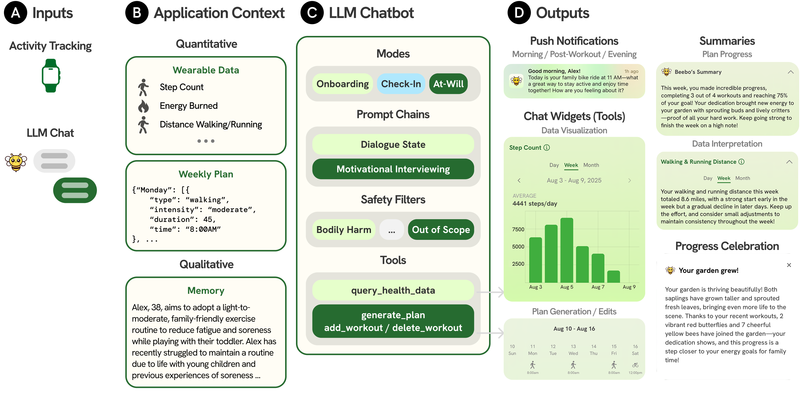
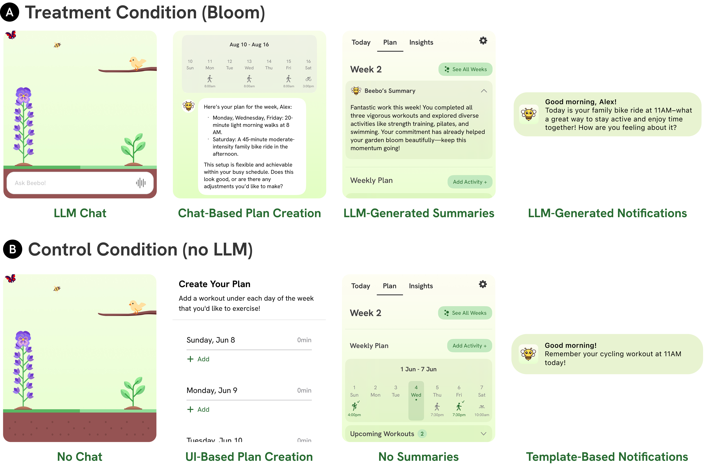
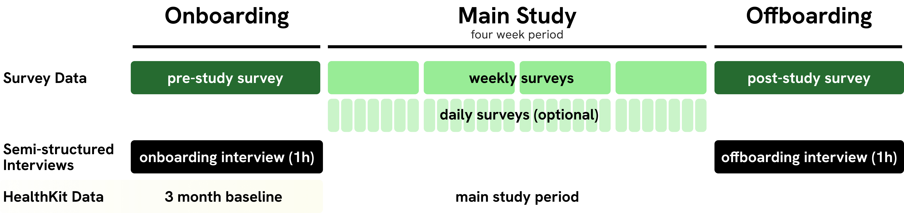
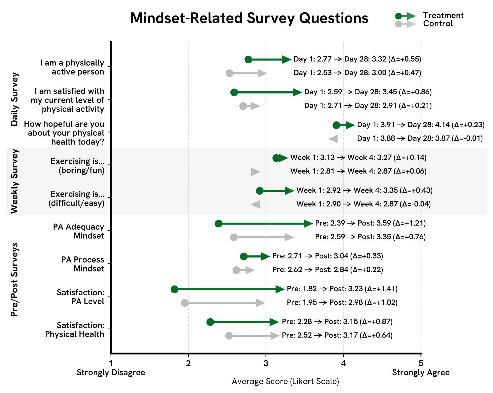
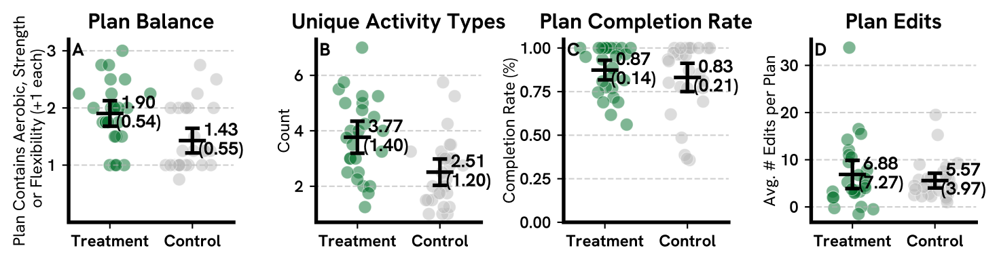

Application Features
Bloom integrates an LLM-based physical activity coaching chatbot with established behavior change interactions. (A) The user begins with an onboarding conversation with Beebo, an LLM coaching chatbot that implements conversational strategies from motivational interviewing and a validated health coaching program. (B) The Today screen, the app's home screen, shows weekly progress, upcoming activities, and proactive messages from Beebo. Conversations with the agent elicit qualitative context, allowing Bloom to personalize various LLM-augmented behavior change interactions, such as (C) LLM-generated physical activity plans, accompanied by progress summaries, (D) LLM-generated notifications that encourage action or reflection, and (E) a garden-based ambient display that updates on the user's lockscreen.
System Overview


Field Study Design


Study Results


Conclusion
In this work, we introduce Bloom, a mobile application integrating an LLM-based coaching chatbot with established behavior change interactions. Bloom leverages qualitative context from coaching conversations to further personalize LLM-augmented behavior change interactions, moving beyond existing text-only approaches in prior work on LLMs for behavioral health. Through a four-week field study involving 54 participants, we found that Bloom fostered positive mindsets toward PA and supported more personalized and flexible workout planning compared to a non-LLM control. Treatment participants reported greater improvements in psychological and motivational outcomes, including increased enjoyment, self-confidence, and a greater sense of agency in managing their PA goals. Both conditions substantially increased participants' exercise levels, doubling the number of individuals who met or exceeded the recommended 150 min/week of PA. Although we observed no advantages for the LLM condition in short-term PA levels, psychological and motivational outcomes indicate the potential for sustained behavior change over longer periods when using our LLM-based health coach. Bloom presents a novel opportunity to create more supportive and empowering behavior change applications that leverage qualitative context to more sustainably shape people's mindsets and motivation.
BibTeX
@article{jorke2025bloom,
title={Bloom: Designing for LLM-augmented behavior change interactions},
author={J{\"o}rke, Matthew and Gen{\c{c}}, Defne and Teutschbein, Valentin and Sapkota, Shardul and Chung,
Sarah and Schmiedmayer, Paul and Campero, Maria Ines and King, Abby C and Brunskill, Emma and Landay, James A},
journal={arXiv preprint arXiv:2510.05449},
year={2025}
}